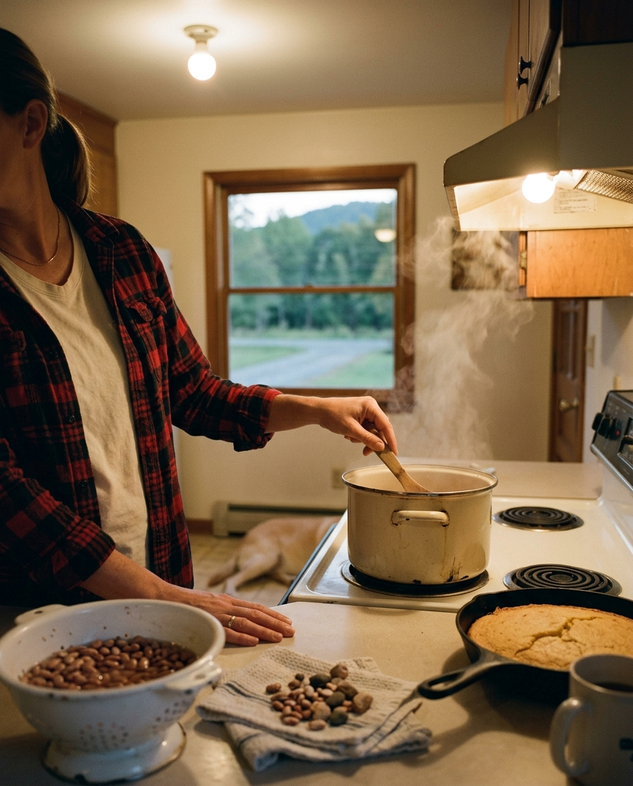

First night the heat comes on, the house smells like a summer of dust burning off the vents, and that is when the beans go on. Nobody decided that. It is just what happens in this kitchen, the way the porch chairs come in after the first frost.
Soup beans are not much of a recipe. Pintos, a ham hock, water, salt, and the afternoon. The only real work is sorting the beans before they soak, because a bag of dried beans from anywhere still has a few small stones in it, and you find out the hard way only once. The cornbread is the part people argue about. Ours has no sugar in it. If you want cake, make cake.